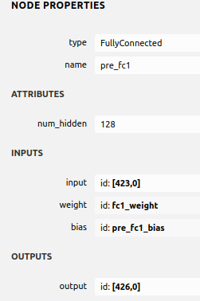

mxnet模型转tflite
深度学习
今天尝试把insightface的模型转换到tflite格式，在此做个记录。
安装依赖
转换工具使用的是微软的mmdnn，感觉好像有段时间没更新了，还是需要手动修改一些地方才可以正常运行。
pip install mxnet-cu101mkl scikit-learn mmdnn tensorflow==1.15.2修改
np.load默认参数因为现在的
numpy默认load的时候allow_pickle=False，所以需要进入mmdnn中全局搜索np.load，并修改其参数，我这次是mxnet转tensorflow，就只要改conversion/common/DataStructure/emitter.py和conversion/tensorflow/tensorflow_emitter.py文件就好了。
下载模型
从insightface的modell zoo中下载一个模型，我下载的是mobilenet模型
修改模型
我下载的这个模型可能是因为之前训练的模型构建问题，有一个名为pre_fc1的层的权重参数却不叫pre_fc1_weight，会导致转换出错。

需要修改一下模型参数名称。我网上看了下没发现有好的修改param参数名称的方法，直接替换json和param文件中的fc1_weight为pre_fc1_weight会导致加载失败，因此我就将mmdnn/conversion/mxnet/mxnet_parser.py中410行改成如下：
if source_node.name=='pre_fc1':
weight = self.weight_data.get('fc1' + "_weight").asnumpy().transpose((1, 0))
else:
weight = self.weight_data.get(source_node.name + "_weight").asnumpy().transpose((1, 0))同时，因为insightface的模型输入时的归一化操作被固定在了模型中，因此需要修改网络，我找了半天也没找到办法。。于是就直接修改json文件，使用下列程序删除前面两个节点：
s= json.load(open('/home/zqh/workspace/insightface/test/model-symbol.json.bak'))
for nodes in s['nodes']:
for inputs in nodes['inputs']:
inputs[0]=inputs[0]-2
for i in range( len(s['arg_nodes'])):
s['arg_nodes'][i]=s['arg_nodes'][i]-2
for i in range( len(s['node_row_ptr'])):
s['node_row_ptr'][i]=s['node_row_ptr'][i]-2
for heads in s['heads']:
heads[0]=heads[0]-2
ss=json.dumps(s)
with open('/home/zqh/workspace/insightface/test/model-symbol.json','w') as f:
print(ss, file=f)NOTE： 上面的代码只是修改节点索引，后面需要手动把模型json文件不需要的节点删除。
转换模型
运行命令：
mmconvert -sf mxnet -in ../models/model-symbol.json -iw ../models/model-0000.params -df tensorflow -om mbv1face --inputShape 3,112,112 --dump_tag SERVING即可得到tensorflow.savemodel格式的模型，再利用toco：
toco --saved_model_dir mbv1face/ ----output_format tflite --output_file mbv1face.tflite